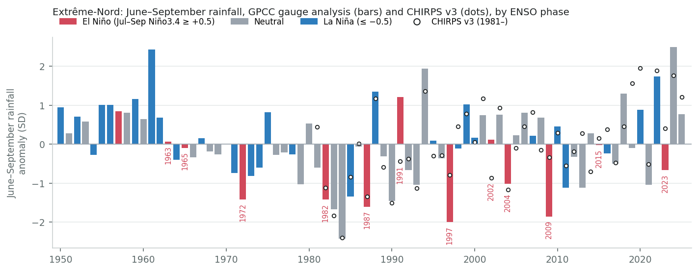
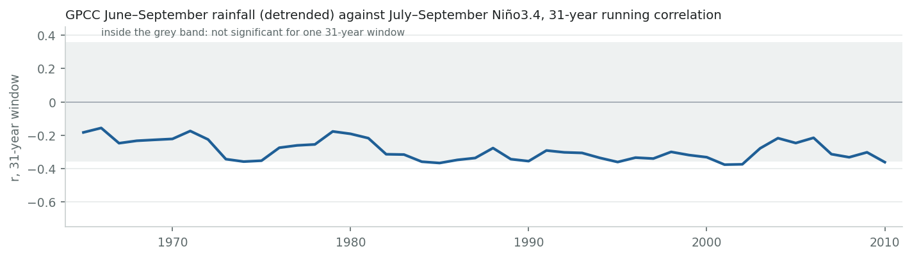
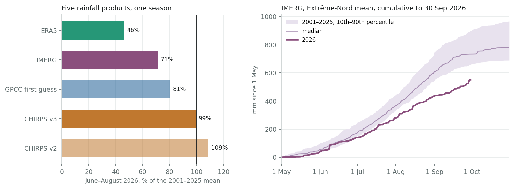
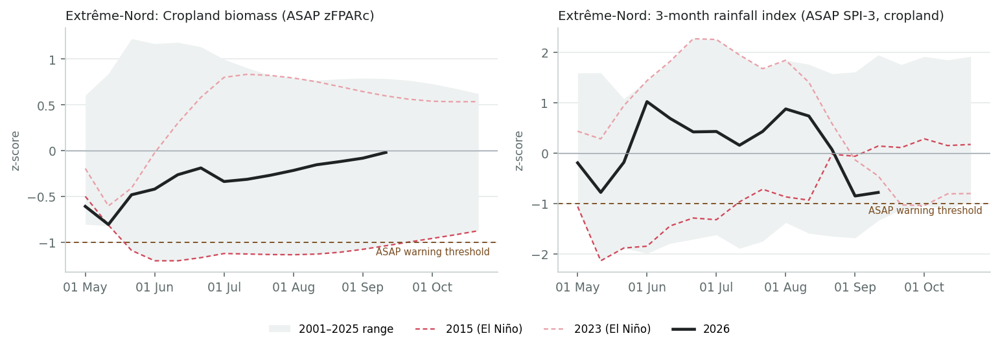
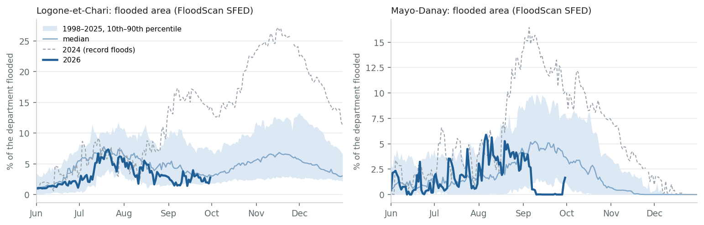
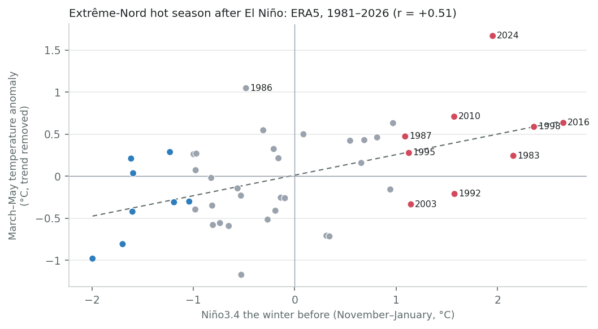
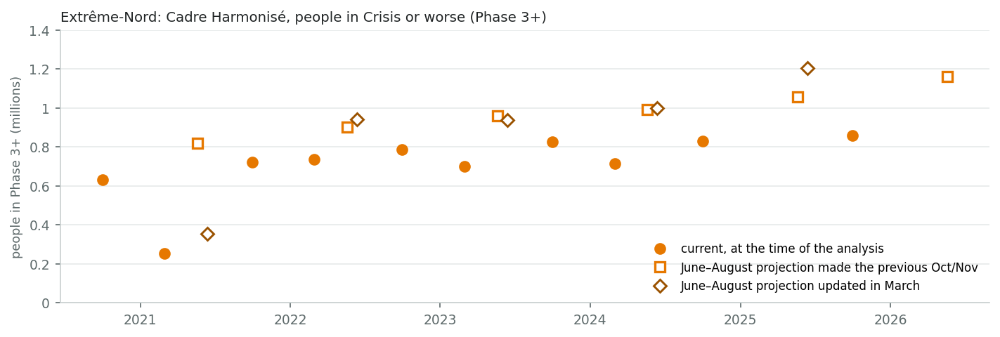

Teleconnections · ENSO deep dive
1. El Niño tilts the odds towards a dry rainy season here, without deciding it. Of the nine El Niño seasons since 1981, five to seven (depending on the record) fell in the driest third of June–September totals, and at most one in the wettest. That roughly doubles the chance of a dry season, from one in three to about two in three. In the gauge-based records the correlation is about −0.3, so El Niño explains a tenth of the year-to-year variation. Strong events have differed: 1987 and 1997 were dry, 2015 was near normal in the gauge-based records.
2. The 2026 season was late and patchy, and drier in the north. The records disagree on how dry. For June–August 2026, the five rainfall products range from 46% to 109% of their 2001–2025 means. IMERG makes it the driest since 2001, and FEWS NET puts June–September 20–50% below average in Logone-et-Chari. CHIRPS puts the region near normal. Crop biomass fell behind in June and was back to normal by mid-September. The satellite and reanalysis products all show a dry May, and IMERG, the only one that already covers September, shows a dry finish. No gauge inside Extrême-Nord has reported to the international archives in 2025 or 2026, so national station data are the only way to settle the question.
3. Floods do not follow El Niño here. The largest flood years since 1998 (2024, 2010, 2022, 2019) were neutral or La Niña. To 30 September, 2026 had the smallest flooded area in the FloodScan record. But 26 mm of rain fell across the region on 29 September, and the Logone's high water normally comes in October–November.
4. The clearest El Niño effect still to come is heat. March–May temperature in Extrême-Nord tracks the El Niño of the winter before (r = +0.51). After the 2023/24 El Niño came the hottest March–May on record. The El Niño now peaking is stronger, so a hotter-than-normal March–May 2027 is likely. That is the hot season just before the lean season.
5. For the 2027 rains, the El Niño gives no guidance. In the past, the season after a strong El Niño has ranged from very dry (1983) to very wet (2024, the wettest in the gauge record). What matters is the ENSO state during July–September 2027, which no forecast reaches yet. Seasonal forecasts for those months gain useful skill only from the June 2027 issuance.
El Niño and the rains
Drier odds, moderate
5–7 of 9 El Niño seasons since 1981 in the driest third, at most 1 in the wettest; r ≈ −0.3 in gauge-based records.
The 2026 season
Late, patchy, drier north
June–August from 46% to 109% of normal depending on the product; a late start, a dry September and a deficit in the north.
Floods
No ENSO link
Big flood years were neutral or La Niña. 2026: smallest flooded area to 30 September since 1998; Oct–Nov still ahead.
March–May 2027
Likely hotter
Hot-season temperature tracks the previous winter's El Niño (r = +0.51); March–May 2024 was the hottest on record.
The event. NOAA's official Oceanic Niño Index for June–August 2026 is +1.8 °C, the highest June–August value since the record starts in 1950, above 1997 (+1.5) and 2015 (+1.4). So 2026 is a stronger summer El Niño than any of the analogues below. NOAA's September outlook gives El Niño 100% odds through January–March 2027, with a peak in October–December at a median of +2.67 °C on its relative index. It then weakens: El Niño 82% for March–May, and neutral favoured (55%) for April–June 2027. La Niña stays at 3% or less in every outlook through May–July 2027. IRI's outlook, on the traditional index, keeps El Niño more likely than not into May–July (61%). Both agree on one thing: no published ENSO forecast reaches the 2027 rainy season.
Where the calendar stands. Extrême-Nord gets its rain from May to October, most of it in July–September, with the peak in August. The 2026 rains, the part of the year El Niño acts on most directly, are over. What remains is:
Northern Cameroon belongs to the Sahel's monsoon regime, where El Niño is associated with a weaker West African monsoon and less July–September rain. The link is well documented for the Sahel as a whole. It strengthened after about 1970 (Janicot et al. 1996; Losada et al. 2012) and is modest in size: ENSO explains about a tenth of Sahel rainfall variance, less than Atlantic and Mediterranean sea temperatures (Diatta & Fink 2014). The survey's catalogue grades Cameroon as "moderate, El Niño drier, June–September". This section tests that for Extrême-Nord alone, in five records.
The result is consistent across records in direction and in its effect on the odds, but not in strength. In every record, El Niño seasons cluster in the driest third and almost never reach the wettest. Detrended correlations are −0.23 to −0.36, except ERA5's −0.47.
ERA5 needs a flag. It has none of the recovery in Sahel rainfall since the 1980s that every gauge-based and satellite record shows: about −1 mm per decade, against +30 to +38. It also gives 2026 a deficit that neither the vegetation nor CHIRPS supports (section 3). The same pattern, a spurious drying over central Africa, has been found in ERA5 over the Central African Republic. Read ERA5's stronger correlation as an upper bound.

| Record | Years | r | r, trend removed | p | El Niño seasons: driest / middle / wettest third | La Niña: driest / middle / wettest | Trend, mm per decade |
|---|---|---|---|---|---|---|---|
| GPCC | 1981–2025 | −0.28 | −0.30 | 0.05 | 6 / 2 / 1 of 9 | 2 / 4 / 6 of 12 | +30 |
| CHIRPS v3 | 1981–2025 | −0.30 | −0.34 | 0.02 | 6 / 3 / 0 of 9 | 1 / 5 / 6 of 12 | +37 |
| CHIRPS v2 | 1981–2025 | −0.21 | −0.23 | 0.14 | 5 / 3 / 1 of 9 | 1 / 5 / 6 of 12 | +38 |
| IMERG | 2001–2025 | −0.38 | −0.37 | 0.07 | 4 / 0 / 1 of 5 | 1 / 2 / 3 of 6 | +47 |
| ERA5 | 1981–2025 | −0.47 | −0.47 | 0.001 | 7 / 2 / 0 of 9 | 1 / 4 / 7 of 12 | −1 |
| GPCC, full record | 1950–2025 | −0.28 | −0.26 | 0.02 | 7 / 4 / 2 of 13 | 7 / 8 / 13 of 28 | −3 |
June–September totals over the region against July–September Niño3.4 (concurrent). Thirds are taken on the detrended series, so the post-1980s recovery of Sahel rainfall does not pile the early years into the driest third. El Niño and La Niña: Niño3.4 ≥ +0.5 and ≤ −0.5. p is for the detrended r. The highlighted ERA5 row is discussed in the text.
For 1950–2025, GPCC (the only gauge analysis long enough) gives a detrended correlation of −0.26: 7 of 13 El Niño seasons in the driest third and 2 in the wettest. The correlation was weaker in 1950–1980 (−0.19, four El Niño seasons, not significant) than in 1981–2025 (−0.30), as the Sahel literature would predict.

Four seasons since 1950 had July–September Niño3.4 of +1.3 °C or more. On CPC's June–August ONI, the one index available for 2026 so far, none reached 2026's +1.8 (1997: +1.5, 2015: +1.4). 1987 and 1997 were among the driest seasons in the gauge-based records. 2015 was close to the median in GPCC and CHIRPS (ERA5: 22nd percentile). In 2023 the records split: IMERG has it in its driest tenth, CHIRPS above the median.
| Season | ONI Jun–Aug | Jul–Sep Niño3.4 | GPCC | CHIRPS v3 | IMERG | ERA5 | Notes |
|---|---|---|---|---|---|---|---|
| 1987 | +1.3 | +1.5 | 7% | 9% | — | 33% | A government drought inventory lists food and water shortages in Logone-et-Chari, Mora and Maroua in early 1987, before that season's rains; we found no report on the season itself. |
| 1997 | +1.5 | +1.9 | 3% | 22% | — | 16% | Driest of the four in GPCC; no 1997 impact report found. |
| 2015 | +1.4 | +1.9 | 51% | 58% | 40% | 22% | GIEWS: reduced Far North production from erratic rainfall and civil insecurity. |
| 2023 | +1.0 | +1.3 | 24% | 67% | 8% | 38% | GIEWS: below-average rainfall hurt yields in localised areas of the Far North. |
| 2026 | +1.8 | not yet | see section 3 | ||||
Percentile of the June–September total within each record (0 = driest, 100 = wettest): GPCC within 1950–2025, the others within their own years (CHIRPS and ERA5 from 1981, IMERG from 2001). Niño3.4: NOAA PSL, ERSST v5. ONI: CPC's official three-month index (ERSST v5), shown so that 2026 can be compared on the same basis; the pinned monthly series behind the July–September column ends in June 2026.
Every record on this page leans on gauges, and here the gauges have thinned out. GPCC's cells over the region held six to nine gauges a month in the rainy season from the 1950s to the 1980s and about five in the 1990s. That dropped to one or two until 2004, and none in the rainy months since (a single gauge in 2020 reported only in the dry season). Before 1927 there were none at all, and GPCC's values for 1891–1903 are its climatology repeated.
The Maroua-Salak synoptic station does appear in NOAA's daily archive (GSOD) in most years up to 2024, but patchily: 360 days in 2020, 129 in 2024. Nothing appears for 2025 or 2026. So the 2026 gauge input to GPCC and CHIRPS comes from Chad and Nigeria, which explains part of the disagreement. It also means the records of Cameroon's national meteorological service (DNM) and ONACC are worth more than any further satellite comparison.
| 1920s | 1930s | 1940s | 1950s | 1960s | 1970s | 1980s | 1990s | 2000s | 2010s | 2020s | |
|---|---|---|---|---|---|---|---|---|---|---|---|
| Gauges per month, June–September | 0.3 | 1.4 | 2.0 | 6.1 | 7.4 | 8.2 | 9.2 | 5.3 | 0.5 | 0.0 | 0.0 |
GPCC Full Data v2022 (DWD), number of gauges in the 1° cells that make up the region, averaged over June–September months and over each decade (the 2020s: 2020 only, the last year of the product).
Five products, one season, and a spread from 46% to 109% of normal for June–August. What they share:
They disagree on July and August. CHIRPS has them close to normal. IMERG has them at 62–71%, which makes June–September its driest since 2001 for the region and for three of the six departments (Logone-et-Chari, Mayo-Danay and Mayo-Kani). ERA5 is lower still, at 46%, but its record has the problems set out in section 2.

| Product | What it is | May | Jun | Jul | Aug | Sep | Jun–Aug | Rank, driest = 1 |
|---|---|---|---|---|---|---|---|---|
| GPCC | Gauge analysis (NOAA PSL combined product); the record ends in December 2025. | — | — | — | — | — | — | — |
| CHIRPS v3 | Satellite infrared blended with gauges; CHC, monthly. | 78% | 114% | 96% | 95% | — | 99% | 11 of 26 |
| CHIRPS v2 | The previous CHIRPS version, still produced (IRI Data Library). | 75% | 114% | 104% | 110% | — | 109% | 19 of 26 |
| IMERG | Satellite microwave and infrared, late run (no gauge adjustment); daily. | 59% | 90% | 71% | 62% | 80% | 71% | 1 of 26 |
| ERA5 | Reanalysis (no rain gauges assimilated); flagged in section 2. | 22% | 39% | 53% | 44% | — | 46% | 1 of 26 |
| GPCC first guess | Gauge analysis from the first gauge reports of the month (DWD). Gauges in the 1° cells overlapping the region (two of them mostly in Chad): May 1, Jun 0, Jul 1, Aug 0. | 105% | 66% | 87% | 81% | — | 81% | — |
| GPCC monitoring | GPCC's later monitoring product, with more gauges (DWD); to July so far. Gauges in the 1° cells overlapping the region (two of them mostly in Chad): May 1, Jun 7, Jul 1. | 91% | 109% | 90% | — | — | — | — |
Each month and season as a share of the same product's 2001–2025 mean (one baseline for all, set by IMERG's start). Rank among 2001–2026. Blank: not yet published.
CHIRPS v3 puts every department within 6% of normal for June–August. IMERG puts every department below normal, from 63% (Logone-et-Chari) to 81% (Mayo-Sava). The IMERG ranking matches FEWS NET's field-based assessment, which singles out Logone-et-Chari (see below).
| Department | CHIRPS v3, Jun–Aug | IMERG, Jun–Aug | IMERG, Jun–Sep | IMERG Jun–Sep rank, driest = 1 |
|---|---|---|---|---|
| Diamaré | 94% | 79% | 81% | 4 of 26 |
| Logone-et-Chari | 102% | 63% | 66% | 1 of 26 |
| Mayo-Danay | 102% | 79% | 79% | 1 of 26 |
| Mayo-Kani | 98% | 67% | 66% | 1 of 26 |
| Mayo-Sava | 102% | 81% | 84% | 3 of 26 |
| Mayo-Tsanaga | 99% | 72% | 77% | 2 of 26 |
Vegetation is measured from space, independently of any rainfall product. On cropland, biomass in Extrême-Nord was below normal from May through August, lowest in mid-May (z-score −0.8) and in July (about −0.3). It never reached ASAP's warning threshold, and it recovered to the median by mid-September (−0.02, 13th of 26 seasons). That is not the profile of 2015, when cropland biomass stayed below the threshold from June to September.
Across 2001–2025, end-of-season biomass is only weakly related to El Niño (r = −0.21, not significant). Three of the five El Niño years were below normal (2002, 2009, 2015) and two above (2004, 2023). ASAP's 3-month rainfall index, which is driven by a CHIRPS-type estimate, ran positive through August and turned negative in September.

Taken together: below normal in parts and late, with the deficit concentrated in the north, but not a region-wide failure. The harvest assessments of the agriculture ministry (MINADER) and the Cadre Harmonisé cycle of October–November 2026 will say what it did to production.
Floods are the hazard that has brought the large humanitarian responses here. In 2024, OCHA counted 198,000 people affected in Mayo-Danay and 156,000 in Logone-et-Chari by early October, and IFRC more than 500,000 across the region. In the FloodScan record since 1998, the flood season of 2026 has been small so far. Logone-et-Chari's flooded share has been below its median on almost every day since August. The region as a whole has its smallest peak to 30 September in 29 years.
It is not over. On 29 September, IMERG put 26 mm over the region (31–35 mm in Diamaré, Mayo-Danay and Logone-et-Chari), the second-wettest day of 2026, and flooded area jumped the next day. ONACC's dekadal bulletin for 1–10 October names floods as the main national risk. Logone-et-Chari's high water normally comes in October–November.

| Unit | Peak flooded share to 30 Sep, 2026 | Median of past years to that date | 2026 rank (1 = most flooded) | Largest whole-season peaks, 1998–2025 |
|---|---|---|---|---|
| Extrême-Nord | 3.1% | 4.8% | 29 of 29 | 2024 (10%), 2010 (8%), 2022 (7%), 2019 (7%) |
| Diamaré | 4.5% | 3.7% | 10 of 29 | 2018 (9%), 2001 (9%), 2016 (7%), 2024 (7%) |
| Logone-et-Chari | 7.3% | 11.3% | 28 of 29 | 2024 (27%), 2010 (22%), 2022 (19%), 2019 (18%) |
| Mayo-Danay | 5.9% | 8.4% | 25 of 29 | 2024 (16%), 2012 (15%), 2025 (13%), 2001 (12%) |
| Mayo-Kani | 3.3% | 2.9% | 12 of 29 | 2018 (14%), 2016 (11%), 2024 (7%), 2015 (6%) |
Flood years do not follow ENSO here. Across 1998–2025, the correlation between the region's peak flooded share and July–September Niño3.4 is −0.17 (p = 0.38, n = 28). The five largest flood years were 2024 (Neutral), 2010 (La Niña), 2022 (La Niña), 2019 (Neutral), 2002 (El Niño). 2024, the largest, was neutral. The Logone's floods depend on rain over its whole basin in Cameroon, Chad and the Central African Republic, and on local storms, not only on the season's total at home.
A weak flood has costs of its own. The floodplains of the Logone (the yaérés) carry dry-season pasture, fishing and flood-recession cropping. In the great drought of 1972–73, flows were too low to flood the Chad plain at all (Suchel 1983). AGRHYMET reports Logone and Chari flows in August 2026 well below a year earlier, and PREGEC lower Lake Chad basin levels. Whether that matters this year depends on October–November, and on assessments we have not seen.
Temperature is where El Niño's effect on Extrême-Nord is clearest. The tropical atmosphere warms for several months after an El Niño peaks, and the region's hot season (March–May, mean temperatures above 31 °C) falls in that window. With the warming trend removed (+0.38 °C per decade), March–May temperature correlates with the previous November–January Niño3.4 at r = +0.51 (p < 0.001, 46 years, ERA5). ERA5's temperature does not have the problems of its rainfall: its temperatures assimilate surface observations and are generally reliable at this scale.
After each of the last three strong El Niños, March–May was among the four hottest of the 46 years (trend removed):
After 1997/98 it was the 6th hottest. Two of the nine events in the table were followed by springs cooler than the trend: 1992, after the Pinatubo eruption, and 2003.

| El Niño winter | Nov–Jan Niño3.4 | March–May after: anomaly, trend removed | Rank, hottest = 1 |
|---|---|---|---|
| 1982/83 | +2.2 | +0.24 °C | 18 of 46 |
| 1986/87 | +1.1 | +0.47 °C | 9 of 46 |
| 1991/92 | +1.6 | −0.21 °C | 27 of 46 |
| 1994/95 | +1.1 | +0.28 °C | 15 of 46 |
| 1997/98 | +2.4 | +0.59 °C | 6 of 46 |
| 2002/03 | +1.1 | −0.34 °C | 33 of 46 |
| 2009/10 | +1.6 | +0.71 °C | 3 of 46 |
| 2015/16 | +2.6 | +0.63 °C | 4 of 46 |
| 2023/24 | +2.0 | +1.67 °C | 1 of 46 |
The El Niño now peaking is stronger than 2023/24, so a hotter-than-normal March–May 2027 is the most likely outcome. It would come at the end of the dry season, when water is shortest and the lean season is starting. 2026 has already been warm: July and August were 1.3–1.5 °C above their 1991–2020 means. Seasonal forecasts will cover March–May 2027 from their November–December issuances.
Food insecurity in Extrême-Nord is high and rising, and its main driver is the conflict in the Lake Chad basin, not the weather. The number of people in Phase 3 or worse at harvest time (October–December) went from 0.72 million in 2021 to 0.86 million in 2025. The October/November analyses projected each following lean season higher: 0.90 million (2022), 0.96 million (2023), 0.99 million (2024), 1.06 million (2025) and 1.16 million (2026). That last projection, from October 2025, is the latest analysis in the HDX/HAPI record: 1.16 million people (23%) in Phase 3+ for June–August 2026, 170,000 of them in Phase 4. We found no March 2026 update.
The 2026 harvest is therefore not in any Cadre Harmonisé figure yet. The October–November 2026 cycle will be the first to reflect it, and its projection for June–August 2027 is the one that matters here. The record is too short (since 2020) to show an El Niño effect on the Cadre Harmonisé on its own terms. In 2015, GIEWS attributed reduced Far North production to "erratic rainfall and civil insecurity". In 2023, it reported below-average rainfall hurting yields "in localized areas".

| Department | Phase 3+, current (Oct–Dec 2025) | Phase 3+, projected Jun–Aug 2026 | of whom Phase 4 | Share in Phase 3+ |
|---|---|---|---|---|
| Diamaré | 101 525 | 121 830 | 0 | 12% |
| Logone-et-Chari | 107 780 | 192 464 | 30 794 | 25% |
| Mayo-Danay | 129 801 | 199 028 | 34 614 | 23% |
| Mayo-Kani | 92 658 | 138 987 | 13 237 | 21% |
| Mayo-Sava | 154 075 | 176 901 | 34 239 | 31% |
| Mayo-Tsanaga | 274 771 | 332 015 | 57 244 | 29% |
From the Cadre Harmonisé analysis of October 2025, the latest in the HDX/HAPI record for Cameroon.
What El Niño adds to this is a harvest shock in the departments already worst off. FEWS NET's September 2026 assessment expects a below-average harvest, and places Logone-et-Chari, Mayo-Sava and Mayo-Tsanaga in Crisis. Those are the three departments with the highest projected Phase 3+ shares in the table above. Rainfall in Sudano-Sahelian Cameroon matters for yields mostly through the end of the season and dry spells (Nenwala et al. 2025), and the dry September in IMERG is that kind of signal.
The season after a strong El Niño has no consistent character here. The table below lists every season since 1950 that followed a winter with Niño3.4 of +1.0 °C or more. Some were very dry: 1983, in the middle of the Sahel drought, and 1987, when El Niño persisted for a second year. Others were wet, up to 2024: the wettest season in GPCC and the third-wettest in CHIRPS and ERA5, followed by the record floods. What matters is the ENSO state during the 2027 season itself, and the Atlantic and Mediterranean sea temperatures that the literature finds matter as much.
The current outlooks point to a decaying El Niño by mid-2027 and almost no chance of La Niña by May–July. That leaves the July–September 2027 state open. If El Niño lingered, the odds would tilt dry again, as in 1987. If the Pacific turned cool, they would tilt wet and towards flooding.
| El Niño winter | Nov–Jan Niño3.4 | Jul–Sep Niño3.4, next year | Next June–September rain: GPCC | CHIRPS v3 | ERA5 |
|---|---|---|---|---|---|
| 1957/58 | +1.3 | −0.1 | 79% | — | — |
| 1965/66 | +1.3 | −0.3 | 33% | — | — |
| 1972/73 | +1.9 | −1.6 | 21% | — | — |
| 1982/83 | +2.2 | −0.3 | 5% | 4% | 20% |
| 1986/87 | +1.1 | +1.5 | 7% | 9% | 33% |
| 1991/92 | +1.6 | +0.1 | 25% | 38% | 49% |
| 1994/95 | +1.1 | −0.6 | 55% | 42% | 53% |
| 1997/98 | +2.4 | −1.2 | 46% | 73% | 89% |
| 2002/03 | +1.1 | +0.2 | 76% | 82% | 58% |
| 2009/10 | +1.6 | −1.4 | 66% | 62% | 78% |
| 2015/16 | +2.6 | −0.5 | 42% | 64% | 40% |
| 2023/24 | +2.0 | −0.1 | 100% | 96% | 96% |
Percentile of the following June–September (0 = driest): GPCC within 1950–2025, CHIRPS v3 and ERA5 within 1981–2025. Across all years since 1982, the correlation between a winter's Niño3.4 and the next rainy season (trend removed) is +0.13 in GPCC, +0.19 in CHIRPS v3 and +0.14 in ERA5, none significant.
ECMWF's SEAS5 forecasts for July–September rainfall over Extrême-Nord have low skill until the June issuance. A forecast made in April or May, when planting decisions are taken, is a weak guide. The regional forum PRESASS (April–May) and the June–July updates are the earliest useful signals for 2027.
| SEAS5 issued in | March | April | May | June | July |
|---|---|---|---|---|---|
| Median r, July–September, Extrême-Nord cells | low+0.29 | low+0.18 | low+0.17 | moderate+0.43 | moderate+0.44 |
From the team's SEAS5 skill cube (ensemble mean against ERA5, 1981–2025, detrended): low < 0.30, moderate 0.30–0.50. The reference is ERA5, whose weaknesses over this region are discussed in section 2.
| When | What | Why it matters here |
|---|---|---|
| 8 October, 12 November, 10 December 2026 | NOAA CPC ENSO outlook | Peak strength and the timing of the decay; the first outlooks to reach June–August 2027 arrive in early 2027. |
| October–November 2026 | Logone high water; ONACC dekadal bulletins | The flood peak in Logone-et-Chari usually falls here; the late-September rains have restarted flooding. |
| October–November 2026 | Cadre Harmonisé national cycle; MINADER harvest results; PREGEC validation (late November) | The first food-security numbers to reflect the 2026 harvest, and the first projection for the June–August 2027 lean season. |
| November–December 2026 | Seasonal forecasts (C3S, SEAS5) reaching March–May 2027 | Temperature outlook for the hot season, where the El Niño signal is strongest. |
| March 2027 | Cadre Harmonisé update | Revises the lean-season projection with the dry-season picture. |
| April–May 2027 | PRESASS 2027 (regional seasonal forecast forum) | The first consensus outlook for the 2027 rains; still low skill at that lead. |
| June–July 2027 | SEAS5 June and July issuances; the ENSO state in summer | The first forecasts with moderate skill for July–September over Extrême-Nord. |
Region. Extrême-Nord as the CODAB admin-1 polygon (CM004); departments from CODAB admin-2.
Rainfall.
Season and baselines. The rainy-season total is June–September. The ENSO relationship uses 1981–2025 (IMERG 2001–2025), detrended before taking thirds. The 2026 comparisons use one baseline for all products, 2001–2025, set by IMERG's start.
ENSO. Niño3.4 from NOAA PSL on the ERSST v5 basis: the survey's pinned series, which ends in June 2026. El Niño is ≥ +0.5 °C and La Niña ≤ −0.5 °C, averaged over July–September. For 2026, CPC's official ONI. The forecast figures are from NOAA CPC (September 2026 discussion and relative-index outlook) and IRI (September 2026).
Vegetation. JRC ASAP per-region dekadal indicators (zFPARc and SPI-3 on cropland), as in ds-asap-trends.
Floods. AER FloodScan SFED, daily share of each unit flagged as flooded, 1998–2026, from the team's database. FloodScan sees larger standing water only.
Temperature. ERA5 monthly-mean 2 m temperature (CDS), mean of the 0.25° cells touching the region.
Food security. Cadre Harmonisé results via HDX/HAPI (the team's IPC mirror).
Forecast skill. SEAS5 skill from the team's seas5-skill cube: ensemble mean against ERA5, 1981–2025, detrended.
External reports (FEWS NET, PREGEC, AGRHYMET, ASAP notes, GIEWS, ONACC, NOAA, IRI) are cited as published; we have not seen MINADER or DNM data.
Generated by extreme_nord_deep_dive.py from deep_dives/extreme-nord.toml. Niño3.4 series as in the global survey.